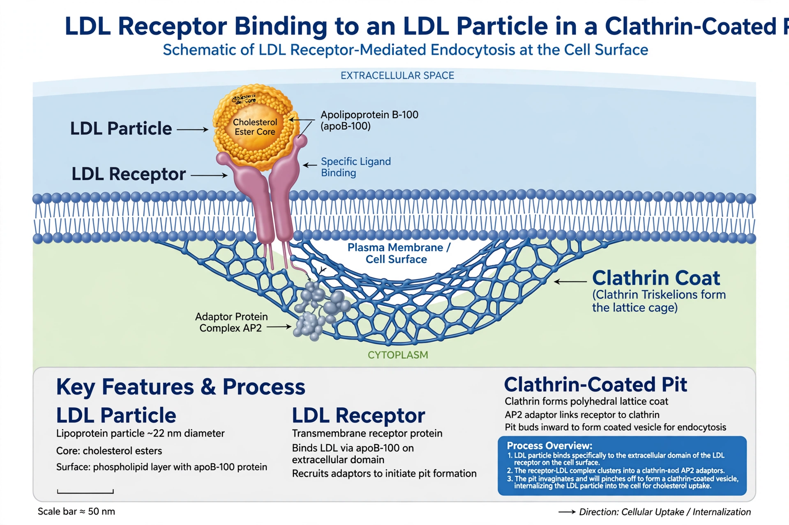

| LDL receptor | |
|---|---|
| Gene | LDLR (chromosome 19p13.2) |
| Protein | 839-amino-acid cell-surface glycoprotein |
| Ligands | ApoB-100 (on LDL), ApoE (on remnants) |
| Function | Receptor-mediated endocytosis of cholesterol-rich LDL |
| Regulation | SREBP pathway (upregulated when cells need cholesterol); degraded by PCSK9 |
| Disease | Mutations cause familial hypercholesterolaemia |

The low-density lipoprotein receptor (LDL receptor, or LDLR) is a cell-surface receptor that recognises apolipoprotein B-100, the protein embedded in low-density lipoprotein (LDL) particles, and apolipoprotein E on chylomicron and VLDL remnants. By binding these particles and internalising them through receptor-mediated endocytosis, the LDL receptor is the principal route by which cholesterol is cleared from the blood and delivered to cells, above all in the liver. Its discovery by Joseph Goldstein and Michael Brown in the 1970s — recognised by the 1985 Nobel Prize in Physiology or Medicine — explained the inherited disease familial hypercholesterolaemia and founded the modern understanding of cholesterol metabolism on which statin therapy rests.
The human LDL receptor is a mosaic glycoprotein of 839 amino acids encoded by the LDLR gene on chromosome 19. Its extracellular N-terminal ligand-binding domain contains seven cysteine-rich repeats (class A repeats) that bind ApoB/ApoE in a calcium-dependent manner; adjacent is an EGF-precursor homology domain whose "β-propeller" region drives acid-dependent release of the ligand inside endosomes; then an O-linked sugar domain, a single transmembrane helix, and a short cytoplasmic tail containing the NPxY signal that targets the receptor to clathrin-coated pits via adaptor proteins such as LDLRAP1 (ARH).
Receptors cluster in clathrin-coated pits on the cell surface, bind LDL, and are internalised into endosomes. Acidification of the endosome causes the receptor to fold back on itself and release its cargo; the LDL proceeds to lysosomes, where its cholesteryl esters are hydrolysed to free cholesterol for membrane synthesis, hormone and bile-acid production, and storage. The receptor itself normally recycles to the surface, making a round trip every ~10 minutes and mediating the uptake of many particles over its ~20-hour lifespan. When the protein PCSK9 binds the receptor, however, it diverts it to lysosomal degradation instead of recycling — the mechanism exploited by PCSK9-inhibitor drugs, which greatly increase hepatic LDL receptors and lower blood LDL.
Receptor synthesis is controlled by the transcription factor SREBP-2: when intracellular cholesterol falls, SREBP is cleaved in the Golgi and enters the nucleus to switch on LDLR and cholesterol-synthesis genes (including HMG-CoA reductase). Statins, by inhibiting HMG-CoA reductase, lower cell cholesterol, trigger this pathway, and thereby increase LDL receptor numbers — the main way they clear LDL from blood. Thyroid hormone and oestrogens also modulate expression; the hepatic LDL receptor pool is the dominant determinant of plasma LDL levels.
More than 2,000 mutations in LDLR are known, grouped into classes affecting synthesis, transport to the surface, ligand binding, internalisation, or recycling. Heterozygous familial hypercholesterolaemia (about 1 in 250 people) halves receptor function, doubles LDL cholesterol from birth, and causes premature atherosclerosis; homozygotes (about 1 in a million) have essentially no functional receptors, LDL levels sixfold normal, and may suffer heart attacks in childhood, treated with apheresis, lomitapide, evinacumab, or liver transplantation. Mutations in the receptor's partners — ApoB, PCSK9 (gain of function), and LDLRAP1 — produce related phenotypes. The LDL receptor also serves as an entry route for some viruses, including hepatitis C virus.